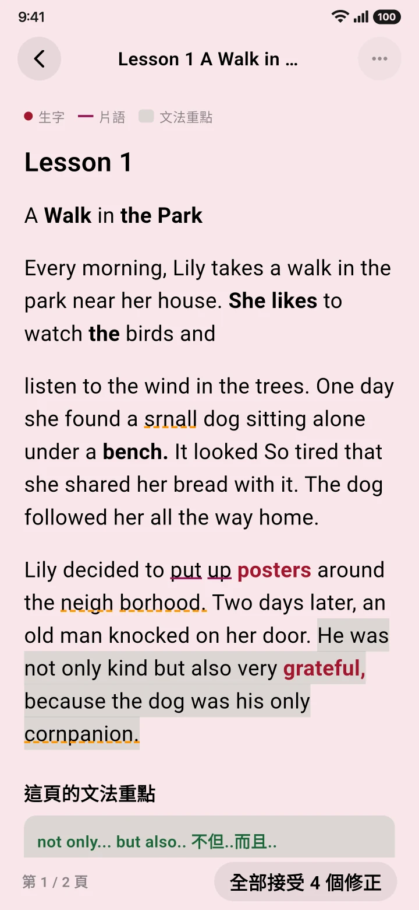
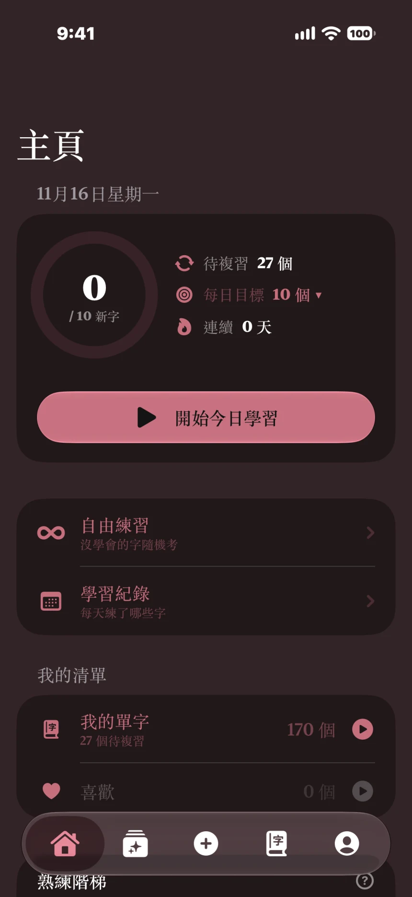
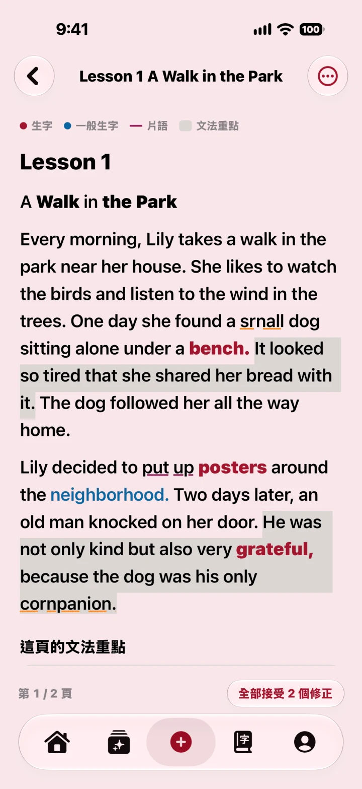
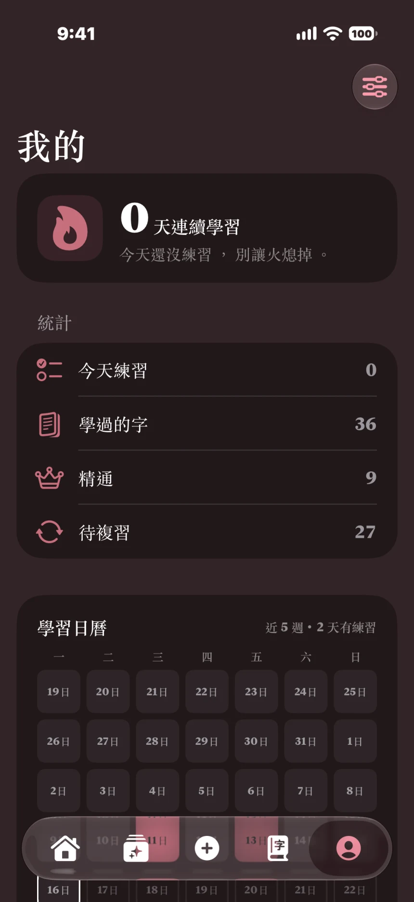
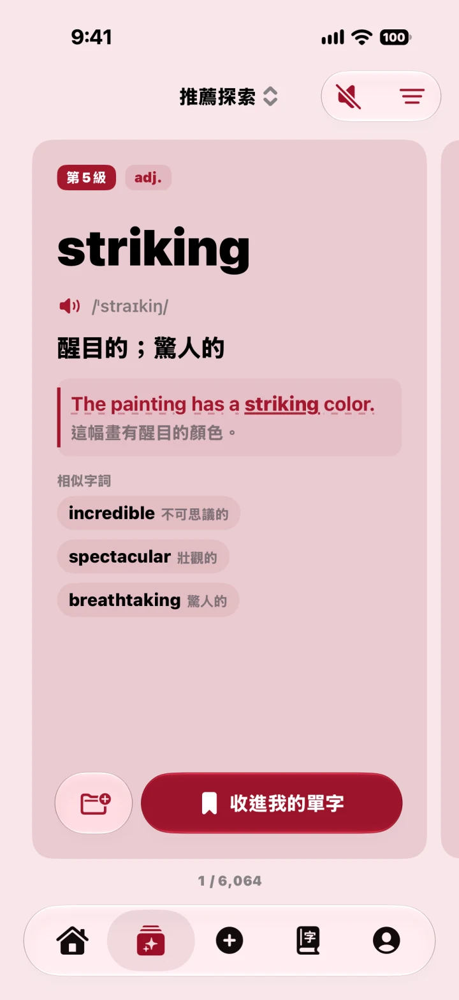
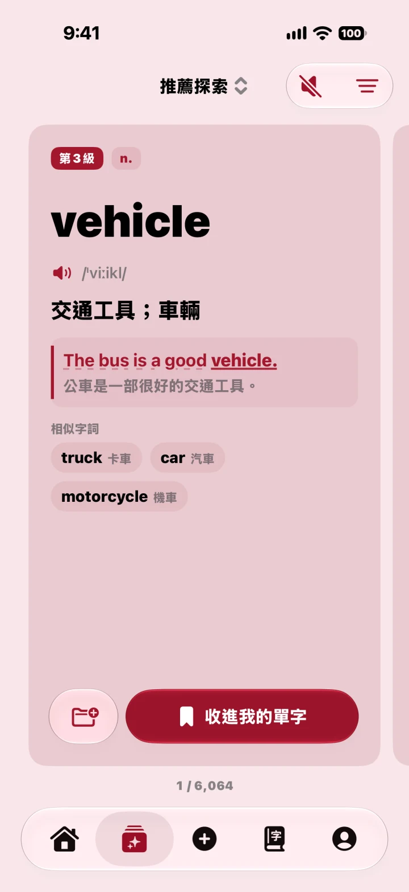

最新消息
捲字和校板的發布、更新和公告
點卡片看完整內容
公告 更新
更新
 進度
進度 發布
發布 更新
更新
捲字 0.2.1(14) Android 版改用正式簽名，建議刪除舊版並重新安裝
0.2.1(14) 起 Android 版換成正式簽名，舊版無法直接覆蓋安裝。刪除前請先同步或匯出資料。
發布捲字 JuanGo 0.2.1(14)：更新簽名並修復已知錯誤
修正 Android 返回鍵被蓋住、課文書架拍照辨識閃退，並為分享清單和單字回報加上數量上限。更新捲字雙平台皆可在 App 內更新
打開捲字就會檢查新版本。iPhone 可以交給 SideInstaller 更新，Android 會提醒下載新的 APK。
發布捲字 JuanGo 0.2.0(12)：修復已知錯誤並優化性能
單字對戰、好友、課文書架和雲端 AI 併入測試版，帳號和更新方式也一起改進。
更新捲字加入單字對戰、好友和課文書架
和同程度的人即時比單字、加好友開房間，還能把課本拍成點字就能查的電子書。公告隱私權政策、服務條款和支援頁上線
三個說明頁上線：收集哪些資料、使用規則、常見問題，以及怎麼刪除帳號。更新捲字 Android 版可以建立和輸入分享代碼
Android 版也能建立、輸入和管理 8 碼分享代碼，把單字清單傳給同學。
更新捲字更新 App 後不會再被登出
修正更新 App 後偶爾被登出的問題。進度兩個 App 都還沒上架，校板還沒有推播
捲字和校板目前都是測試版，還沒有上架商店；校板的手機推播正在開發。
發布捲字 JuanGo 0.1.0(4) 測試版
捲字第一個測試版：用間隔複習安排每天要練的字，內建一萬多個單字。發布校板 BanGo 0.1.0(1) 測試版
把五所高中的校網公告整理成好讀的時間軸，不用登入就能看。
更新